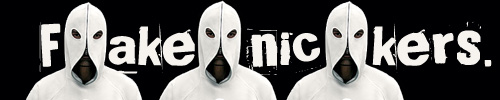

Mirror, mirror on the wall, who is lamest of them all?

Fakenicking, faking, aliasing or whatever you might call it, means that a player is using a nickname that he/she isn’t previously known for or just something hiding his/her indentity. Fakenicking has been part of gaming for years and it is not likely to go away any time soon, at least when it comes to QuakeWorld. A lot of people hate fakenicking and fakenickers but what do they actually hate? The person who is faking or the fact that the player is not using his usual nickname? It’s most likely very case dependent.
Why do people use fakenicks? The most common reason is obviously the fact that people want to hide their identity and thus also their skill level, at least for certain amount of time. Why do people want to hide their identity and skill? For some people, fakenicking is the only option to get action because if they would be using the nicks they are known for, everyone would be scared of their skill and simply wouldn’t play against them. The types of player intentions depend on the player itself; some people want to find easy opponents and smash them while others simply try to find anyone to play with. However, not every fakenicker is a top player and these fakers hide their identity to lure the less skilled and rookie players into their traps.
Good reputation is something most people want to have in life and in games just as well. Surprisingly enough, some fairly good reputationed players actually use fakenicks so they can act childishly, drop during games or do other lame activities on the server. This arguably sounds very stupid but it’s a fact that people actually do this for enjoyment purposes as well as when being angry. There’s no reputation to lose if nobody knows you who are.
Fakenicking is often done by people out of shape or simply playing bad. In a duel, for example, the fakenicking player would probably think something along the lines of ”Oh no! If I lose now, he’s gonna think he’s better than me. And there’s even specs here right now. They’re gonna think I suck when actually I’m just rusty. And what if someone uploads the demo to challenge-tv? Everything I built will collapse, ohnoez!”. Naturally, everyone wants to perform well in a match, but sometimes the will is just not enough to do the trick and therefore the fakenick is there to cover their image and ego.
A point when fakenicking gets really ugly is when somebody fakenicks as someone else. In most cases this is easy to detect since the fakenickers are usually dumb enough to use the nickname of someone that is very good while the faker himself isn’t. Also, fakenicking while using cheats is something that people have done - luckily not so much lately. The point of this is obviously to bring down the reputation of a certain player and cause as many problems as possible for him.
Another species of QuakeWorld player, closely related to the fakenicker, is the excusenicker. He will not fake, but change his nickname to something that makes it obvious to other players or spectators that he has a valid excuse in case of severe suckage. Excusenickers can usually be identied by the suffixes of their nickname. Popular choices would be _mp3, _newmouse, _fuh, _gl, or _newcfg. These suffixes are supposed to make the other players and spectators think that: ”Ahhhh, so I guess he usually owns, but it’s perfectly logical that he’s sucking today: He’s listening to mp3s while playing!”. As both the fakenicker and the execusenicker are very closely related mammals, crossbreeds are not uncommon either. These crossbreeds don’t even bother to attach a suffix to their nickname, they just use the suffix as a name itself. Popular choices for the latter would be ’newmouse’, ’test’ or ’cfg_test’. Needless to say, this behaviour can be seen as a defensive-mechanism for repuation.
Some fakenickers actually use the same fake nick for an extended duration of time. In mix games for example, these players are likely to reveal the division they play in, but not their identity. They think everything is okay now since, having revealed their strength to the public, they won’t mess up the evenness of batteling teams. In most cases however, these players still feel free to behave badly, call other players ”noobs” for making miniscule mistakes, or perhaps even drop.
All in all, it is obvious that most people don’t like fakenicking or fakenickers, one way or another. However, the most funny fact is that some fakenickers don’t actually like other fakenickers. Maybe because they’re annoying?
there has been a lot of fakers throughout the time and I guess there's no way to get rid of them.. what is your worst experience with fakers?
I think mine was when whole LegeArtis joined the servers faking as a div2 team, just because they knew we wouldn't play them otherwise :) there's no doubt that most of the biggest fakers have been playing for LA :)